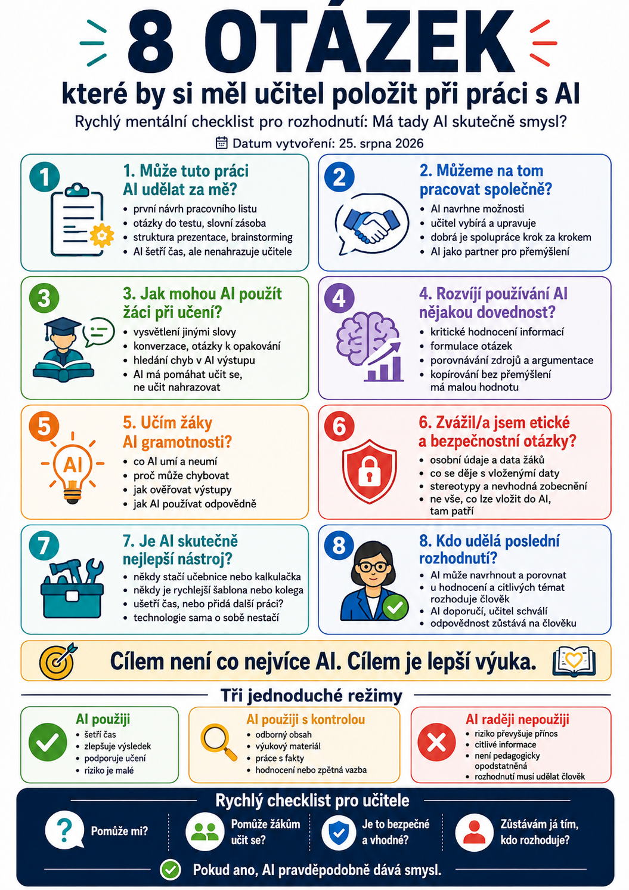

Umělá inteligence dnes dokáže učiteli pomoci s přípravou hodiny, pracovním listem, diferenciací, zpětnou vazbou, prezentací, testem nebo třeba návrhem projektu.
To ale ještě neznamená, že bychom ji měli použít pokaždé.
Někdy AI opravdu šetří čas.
Jindy jen vytvoří další práci navíc.
A někdy je nejlepší ji nepoužít vůbec.
Proto je užitečné položit si před použitím AI několik jednoduchých otázek.
Nejde o žádný složitý audit. Spíš o rychlý mentální checklist, který pomůže rozhodnout:
Má tady AI skutečně smysl?

1. Může tuto práci AI udělat za mě?
První otázka je čistě praktická.
Existuje část mé práce, kterou nemusím dělat ručně?
Například:
- vytvoření první verze pracovního listu,
- návrh otázek do testu,
- tvorba slovní zásoby,
- zjednodušení textu,
- vytvoření několika variant stejné aktivity,
- návrh struktury prezentace,
- brainstorming témat,
- převod textu do tabulky,
- příprava modelových situací.
Tady může AI skutečně šetřit čas.
Důležité ale je rozlišovat mezi:
a
„AI udělá práci místo mě.“
To není totéž.
U většiny učitelských úkolů je mnohem bezpečnější chápat AI jako tvůrce první verze, kterou učitel následně kontroluje a upravuje.
2. Můžeme na tom pracovat společně?
Někdy není nejlepší AI něco celé předat.
Mnohem užitečnější je spolupráce.
Například:
Navrhni mi tři možné aktivity na toto téma.
Potom si jednu vybereme.
Dále:
Druhou aktivitu uprav pro slabší třídu.
A potom:
Přidej jednoduchý příklad.
AI tedy nemusí být automat na hotové výsledky.
Může fungovat jako partner pro přemýšlení.
To je často jeden z nejlepších způsobů jejího využití.
3. Jak mohou AI použít žáci při učení?
Další otázka obrací perspektivu.
Ne:
Jak AI využiju já?
Ale:
Jak ji mohou smysluplně využít žáci?
Například:
- nechat si vysvětlit pojem jinými slovy,
- procvičovat konverzaci v cizím jazyce,
- vytvářet otázky k opakování,
- nechat si zkontrolovat porozumění,
- porovnávat dvě odpovědi,
- hledat chyby v AI výstupu,
- nechat si vytvořit modelový příklad,
- simulovat pracovní pohovor,
- trénovat argumentaci.
Rozdíl je v tom, zda AI:
nebo
pomáhá učit se.
4. Rozvíjí používání AI nějakou dovednost?
Tohle je podle mě jedna z nejdůležitějších otázek.
Pokud žák používá AI, co se při tom vlastně učí?
Například:
- kriticky hodnotit informace,
- formulovat otázku,
- porovnávat zdroje,
- argumentovat,
- opravovat chyby,
- reflektovat vlastní práci,
- pracovat s jazykem,
- vybírat důležité informace.
Pokud jedinou činností žáka je:
vložit zadání → zkopírovat odpověď → odevzdat
pak je vzdělávací hodnota velmi malá.
Pokud ale musí výstup analyzovat, ověřovat a upravovat, může jít o velmi hodnotnou aktivitu.
5. Učím žáky AI gramotnosti?
Nestačí pouze dovolit nebo zakázat ChatGPT.
Žáci potřebují rozumět tomu:
- co AI umí,
- co neumí,
- proč může chybovat,
- proč může vytvářet nepravdivé informace,
- jak ověřovat výstupy,
- jak chránit svoje údaje,
- kdy AI použít,
- kdy ji raději nepoužít,
- jak přiznat její použití.
AI gramotnost tedy není „výuka promptů“.
Je to širší schopnost používat AI informovaně, kriticky a odpovědně.
6. Zvážil/a jsem etické a bezpečnostní otázky?
Ne všechno, co lze do AI vložit, bychom tam také měli vložit.
Před použitím je dobré se zeptat:
- Obsahuje zadání osobní údaje?
- Obsahuje informace o konkrétním žákovi?
- Je tento AI nástroj schválený pro daný účel?
- Vím, co se děje s vloženými daty?
- Nevyužívám AI k rozhodnutí, které má udělat člověk?
- Neobsahuje výstup stereotypy nebo nevhodné zobecnění?
Například:
Navrhni mi způsoby, jak vysvětlit procenta.
je úplně jiný typ použití než:
Tady je kompletní pedagogická dokumentace konkrétního žáka. Řekni mi, co s ním mám dělat.
Druhý případ už vyžaduje výrazně větší opatrnost.
7. Je AI skutečně nejlepší nástroj?
Tohle se snadno přehlédne.
Jen proto, že máme AI, nemusíme s ní řešit všechno.
Někdy je rychlejší:
- otevřít učebnici,
- použít kalkulačku,
- vyhledat oficiální dokument,
- zeptat se kolegy,
- použít hotovou šablonu,
- napsat dvě věty ručně.
AI není automaticky nejlepší nástroj pro každý problém.
Docela dobrá kontrolní otázka zní:
Ušetří mi AI skutečně čas, nebo si právě vyrábím další práci?
Když deset minut ladíme prompt na věc, kterou bychom napsali za dvě minuty, technologická revoluce se poněkud minula účinkem.
8. Kdo udělá poslední rozhodnutí?
Poslední otázka by měla mít ve škole téměř vždy stejnou odpověď:
Člověk.
AI může:
- navrhnout,
- porovnat,
- shrnut,
- upozornit,
- vytvořit varianty.
Neměla by ale automaticky přebírat odpovědnost.
To je důležité zejména při:
- hodnocení,
- zpětné vazbě,
- práci s konkrétním žákem,
- citlivých tématech,
- bezpečnosti,
- legislativě,
- rozhodnutích s významným dopadem.
AI může doporučit.
Učitel rozhoduje.
Osm otázek v rychlé podobě
Před použitím AI se můžeme rychle zeptat:
- Může mi AI tuto práci urychlit?
- Je lepší nechat ji něco vytvořit, nebo s ní pracovat společně?
- Jak může AI pomoci žákům skutečně se učit?
- Jakou dovednost při tom rozvíjíme?
- Učíme zároveň AI gramotnost?
- Je použití bezpečné a eticky v pořádku?
- Je AI vůbec nejlepší nástroj pro tento úkol?
- Zůstává poslední rozhodnutí na člověku?
Příklad: příprava pracovního listu
Představme si, že učitel potřebuje pracovní list do angličtiny.
Může si rychle projít otázky.
Může mi AI ušetřit čas?
Ano. Dokáže vytvořit první návrh.
Můžeme pracovat společně?
Ano. AI vytvoří návrh a já upravím obtížnost.
Pomůže to žákům učit se?
Ano, pokud úlohy odpovídají cíli hodiny.
Rozvíjíme dovednost?
Například slovní zásobu a porozumění textu.
Je v tom AI gramotnost?
Nemusí být. AI zde může být pouze nástrojem učitele.
Jsou zde bezpečnostní problémy?
Pokud nepoužívám údaje o konkrétních žácích, riziko je malé.
Je AI nejlepší nástroj?
Pravděpodobně ano, pokud potřebuji rychle několik variant úloh.
Kdo výsledek schválí?
Učitel.
A během několika desítek sekund máme poměrně slušné rozhodnutí, zda AI použít.
Příklad: hodnocení slohové práce
Teď jiná situace.
Učitel chce AI nahrát slohovou práci konkrétního žáka a nechat ji určit známku.
Tady už kontrolní otázky začnou svítit trochu červeněji.
Ušetří AI čas?
Ano.
Je to automaticky dobrý důvod?
Ne.
Musíme řešit:
- osobní údaje,
- podmínky použité služby,
- spolehlivost hodnocení,
- kritéria,
- možnost zkreslení,
- odpovědnost učitele.
Mnohem vhodnější může být:
Nech AI navrhnout komentáře podle anonymizovaného textu a jasně definované rubriky.
A výslednou zpětnou vazbu zkontroluje učitel.
AI tedy stále pomáhá.
Ale nepřebírá rozhodnutí.
Příklad: žákovský referát
Žák chce použít AI při přípravě referátu.
Máme několik možností.
Varianta A
Nech AI napsat celý referát a ten odevzdej.
Vzdělávací přínos?
Prakticky žádný.
Varianta B
Žák:
- vyhledá zdroje,
- vytvoří vlastní osnovu,
- požádá AI o návrhy otázek,
- nechá si vysvětlit složité pojmy,
- porovná odpovědi se zdroji,
- vytvoří vlastní výstup,
- přizná způsob použití AI.
Tady AI podporuje práci.
Nenahrazuje ji.
A právě takový rozdíl bychom měli žáky učit rozpoznávat.
Nejde o to používat AI co nejvíc
Je snadné sklouznout k představě, že moderní učitel musí mít AI úplně všude.
Nemusí.
Cílem není:
Cílem je:
Pokud k tomu AI pomůže, použijme ji.
Pokud nepomůže, klidně ji nechme zavřenou.
Tabule, papír, rozhovor, učebnice nebo praktická práce kvůli tomu neztratily smysl.
Tři jednoduché režimy
Celý checklist můžeme ještě zjednodušit na tři rozhodnutí.
AI použiji
Když:
- šetří čas,
- zlepšuje výsledek,
- podporuje učení,
- riziko je malé.
AI použiji s kontrolou
Když:
- pracuji s odborným obsahem,
- vytvářím výukový materiál,
- používám fakta,
- připravuji hodnocení nebo zpětnou vazbu.
AI raději nepoužiji
Když:
- riziko převyšuje přínos,
- pracuji s citlivými informacemi,
- použití není pedagogicky opodstatněné,
- vhodnější je jednodušší nástroj,
- rozhodnutí musí jednoznačně udělat člověk.
Dobrá AI otázka není „Co všechno dokáže?“
Mnohem lepší otázka zní:
Co mi v této konkrétní situaci skutečně přinese?
To je rozdíl mezi používáním technologie proto, že je nová, a jejím používáním proto, že je užitečná.
Ve škole by měl vždy vyhrávat druhý přístup.
Rychlý checklist pro učitele
Před použitím AI si stačí položit čtyři základní otázky:
Pomůže žákům učit se?
Je to bezpečné a vhodné?
Zůstávám já tím, kdo rozhoduje?
Pokud máme na všechny čtyři dobrou odpověď, pravděpodobně jsme na správné cestě.
Co následuje?
Další článek už bude hodně praktický:
18 rychlých AI promptů pro učitele – aktualizováno pro rok 2026
Nepůjde o staré příkazy typu „Napiš mi přípravu hodiny“.
Připravíme prompty tak, aby odpovídaly dnešnímu způsobu práce s AI – tedy práci se zdroji, diferenciaci, ověřování, multimodálním vstupům a současným nástrojům jako ChatGPT, Gemini, Copilot nebo NotebookLM.